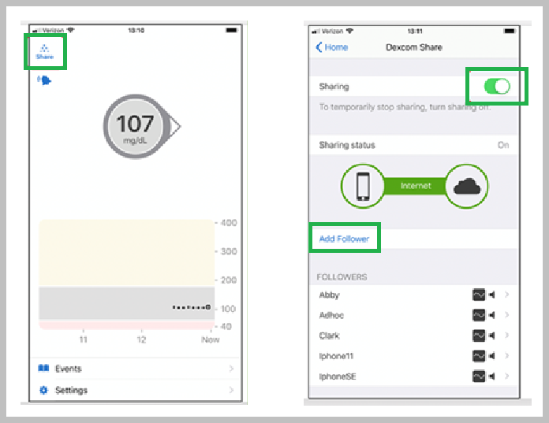
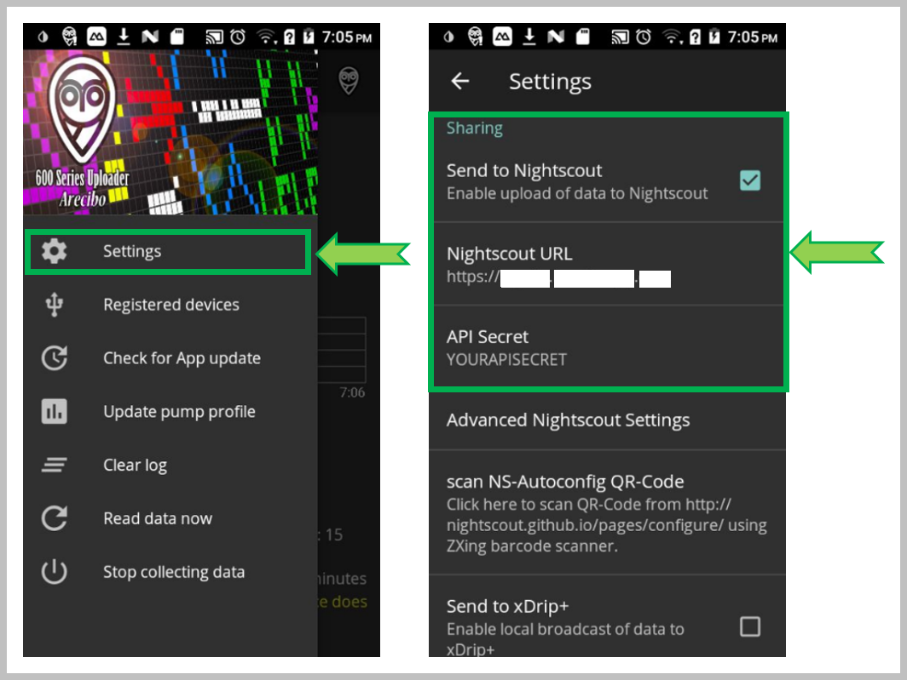
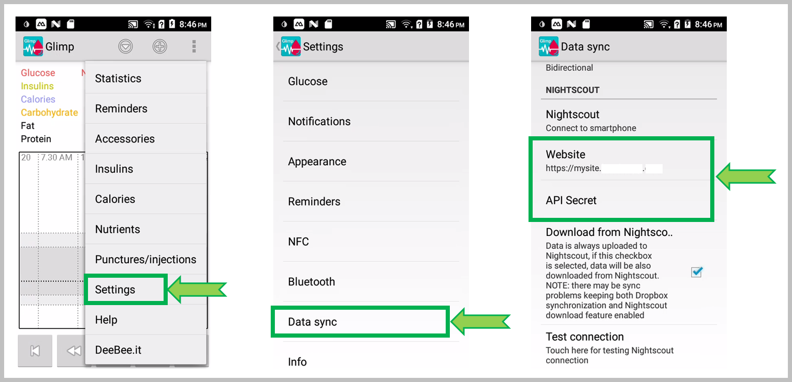
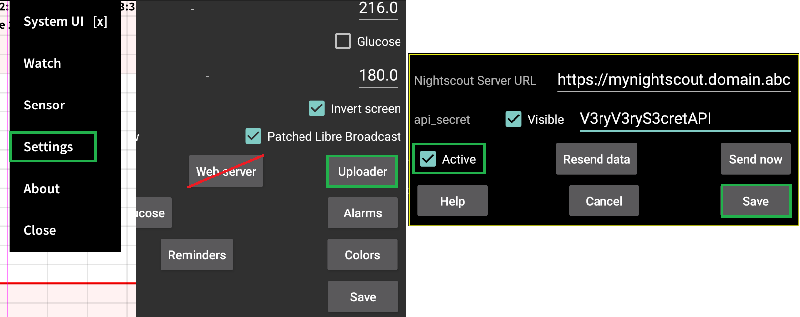
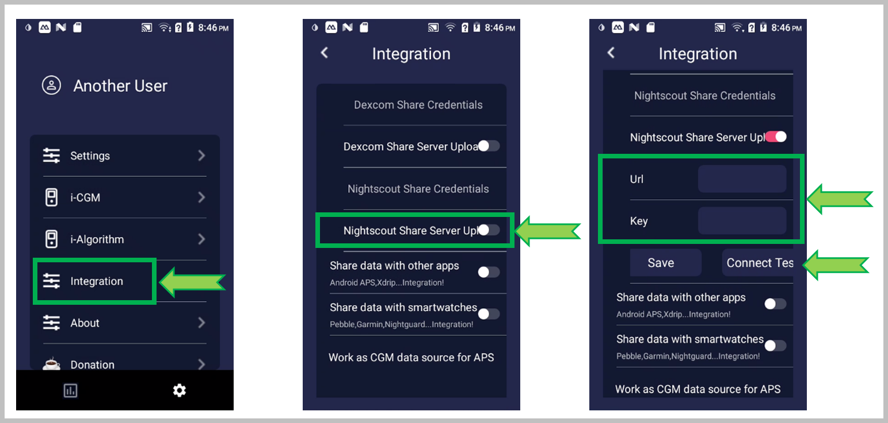
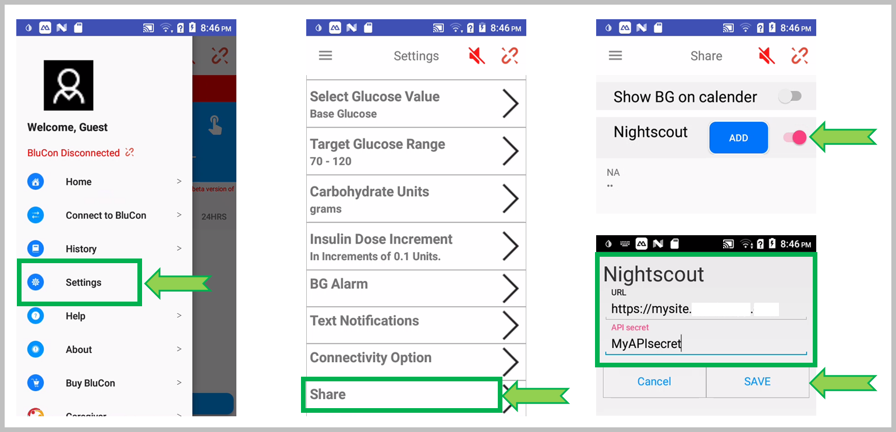
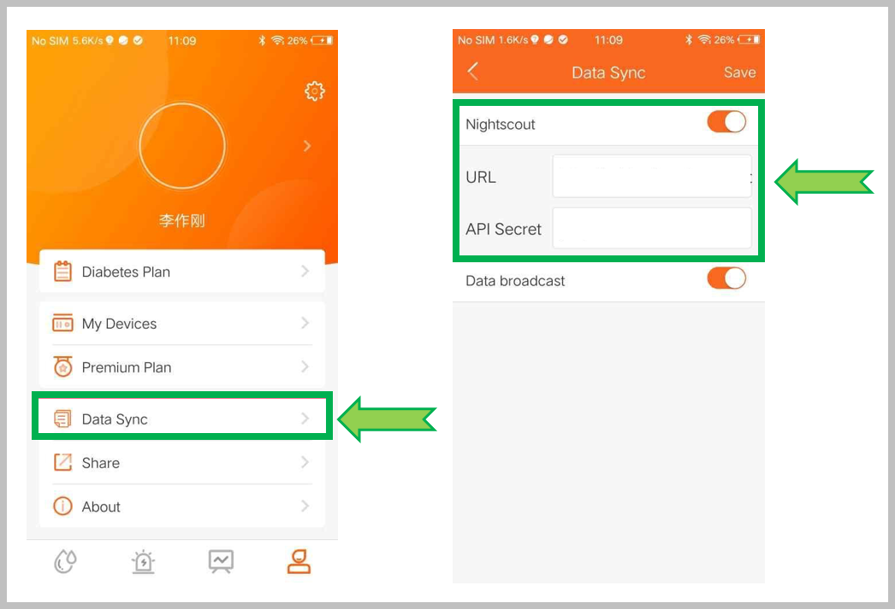
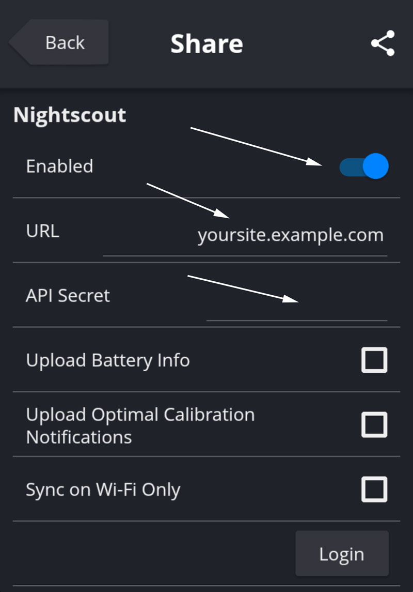
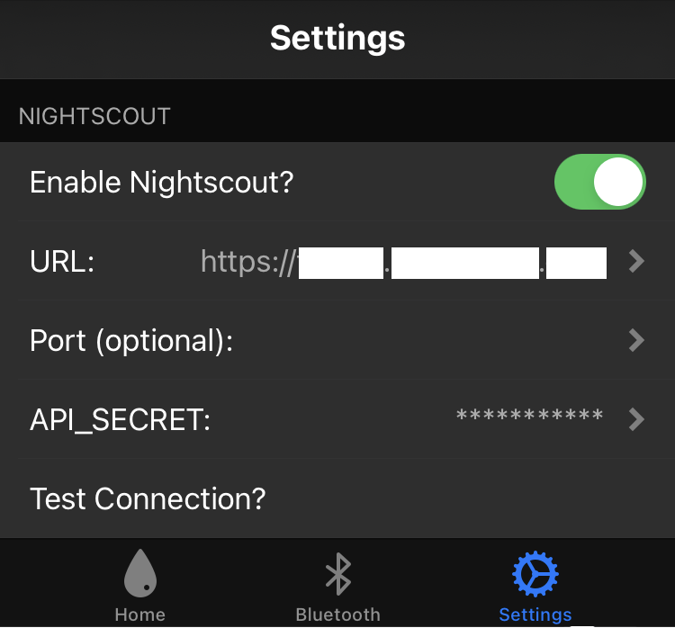

Setup Uploaders
Hint
You usually should express the Nightscout URL in secure **https://**, not only http://.
(Unless you set INSECURE_USE_HTTP to true)
What is my Nightscout URL?
This is the address you type in any browser to display your Nightscout web site.
If you’re using a hosted service, ask the vendor.
Your Nightscout URL defined in Heroku by your App name, is the one that shows when you open your Nightscout site in a browser.
It usually looks like: https://yoursitename.herokuapp.com
{kind=link}
Your Nightscout URL is defined in Railway by your Web app name, as shown in your Dashboard.
It usually looks like: https://yoursitename.up.railway.app

Your Nightscout URL is defined in Northflank by your Web app name, as shown in your project services.
It usually looks like: https://port-name--service-name--project-name--entity-dns-id.code.run
{kind=link}
Your Nightscout URL is defined in Azure by your Web app name, as shown in your App services.
It usually looks like: https://yoursitename.azurewebsites.net
{kind=link}
Your Nightscout URL is defined in Fly.io by the app variable in your fly.toml file.
You can also find it in your Dashboard.
It usually looks like: https://yoursitename.fly.dev
{kind=link}
Your Nightscout URL is defined in FreeDNS.
You can find it in Status - Hostname.
Dexcom
You need at least one follower to use Nightscout share or nightscout-connect plugins.
Hint
If you use a DIY closed loop system it is recommended that you let it upload to Nightscout instead of importing data using Dexcom Share and a Nightscout plugin.
On your master phone, touch the Share icon, enable Sharing. If you have no follower, add one. You can also invite yourself.
{kind=link}
Verify, update or add these variables:
BRIDGE_USER_NAME
BRIDGE_PASSWORD
BRIDGE_SERVER
You need to add bridge in the ENABLE variable. Do not delete other entries, just add bridge after a space.
Verify, update or add these variables:
CONNECT_SOURCE set to dexcomshare
CONNECT_SHARE_ACCOUNT_NAME
CONNECT_SHARE_PASSWORD
CONNECT_SHARE_REGION (must be set to ous if outside of the US, else don’t add this variable)
You need to add connect in the ENABLE variable. Do not delete other entries, just add connect after a space.
MOST COMMON ERRORS
The most common error on initial Nightscout setups is that people incorrectly use an old account or an old password. To test your username and password, go to Dexcom’s Clarity page (check here for USA accounts and here for the others) and try logging in to your Dexcom account. If your account info isn’t valid, or you don’t see any data in your Clarity account… you need to figure out your actual credentials before moving ahead. See here for troubleshooting tips and information on your Dexcom account.
Password
Some people have had problems with their bridge connecting when their Dexcom passwords are entirely numeric. If you have connection issues in that case, try changing your password to something with a mix of numbers and letters.
Medtronic CareLink
Warning
The mmconnect plugin is NOT functional anymore with recent pumps (7xx).
You can use an Android phone with xDrip+. See here how to set it up.
Verify, update or add these variables:
CARELINK_USER_NAME
CARELINK_PASSWORD
MMCONNECT_SERVER(must be set to US if inside the US, or else EU)
You need to add mmconnect in the ENABLE variable. Do not delete other entries, just add mmconnect after a space.
Verify, update or add these variables:
CONNECT_SOURCE set to minimedcarelink
CONNECT_CARELINK_USERNAME
CONNECT_CARELINK_PASSWORD
CONNECT_CARELINK_REGION (must be set to us if inside the US, or else eu)
CONNECT_CARELINK_PATIENT_USERNAME must be set to the patient name if more than one in present in Carelink.
You need to add connect in the ENABLE variable. Do not delete other entries, just add connect after a space.
Medtronic 600 Series with uploader
{kind=link}
You can also use this QR code generator and the menu item Scan NS-Autoconfig QR Code to copy the information.
For hosted Nightscout you’ll find the QR code generator in Uploaders, select the HTTP tab.
You might want to setup additional fields for your pump.
Facebook Group Nightscout for Medtronic
xDrip+
Mind the syntax!
https://API_SECRET@my_nightscout_url/api/v1/
my_nightscout_url will depend on where your site is hosted (see top of this page)
You will find your API_SECRETin your site variables.
Here is how it will look like for some vendors:
https://API_SECRET@yoursite.herokuapp.com/api/v1/
https://API_SECRET@yoursite.up.railway.app/api/v1/
https://API_SECRET@yoursite.guest.t1pal.com/api/v1/
https://API_SECRET@yoursite.10be.de/api/v1/
{kind=link}
Facebook Group xDrip
Glimp
{kind=link}
Juggluco
{kind=link}
Diabox
{kind=link}
LinkBluCon
{kind=link}
Tomato
{kind=link}
Spike
Look here.
{kind=link}
Facebook group Spike App
xDrip4iOS
{kind=link}
Facebook group xDrip4iOS
DIY Closed Loop
See the app documentation in the dedicated page.